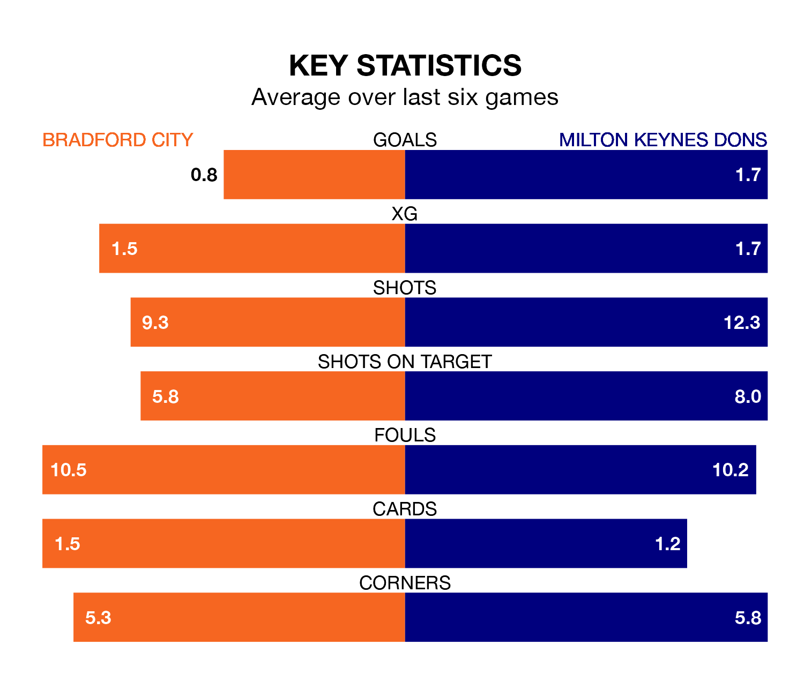

Milton Keynes Dons travel to Bradford City on late Tuesday in EFL League Two.
The visitors come into the game on the back of a win in their last match, having beaten Accrington Stanley 2-1 at home, with goals from Jack Payne and Joe Tomlinson.
The Bantams also won their last match, 1-0 against Wrexham, with their goal scored by Andy Cook.
With 36 goals in 31 games so far this season, Bradford are scoring at below the league average rate with 1.2 goals per game. But they are conceding fewer than average too, letting in 39 goals at a rate of 1.3 per game.
Milton Keynes, meanwhile, are above average scorers, with 1.6 goals per game, compared to a league average of 1.5. They have conceded 1.3 goals per game.
In the last 10 years, Bradford and Milton Keynes have played each other on nine occasions. Bradford won six of them, Milton Keynes two, and they drew once.
On average, the Bantams scored 1.8 goals and the Dons 1.3 in those matches.
Their last meeting was on October 24, when Milton Keynes won 4-1 at home.
Dons are sixth in the table after 30 games, of which they have won 15 and drawn six, earning 51 points.
City are eight places behind the Dons in 14th, with 10 wins and 10 draws putting them on 40 points.
The Bantams are in disappointing form in EFL League Two, with one win and three draws from their last six games.
With four wins and two losses over that period, the visitors' form is much better – they have taken 12 points from 18, compared to the home side's six.
Tuesday's match will be refereed by Oliver Yates, who has taken charge of nine EFL League Two games so far this season, issuing five red cards and booking 39 players. He has awarded three penalties.
He is yet to oversee a match featuring either Bradford or Milton Keynes this season.
Updated: 09:02 (UTC), 13/02/24